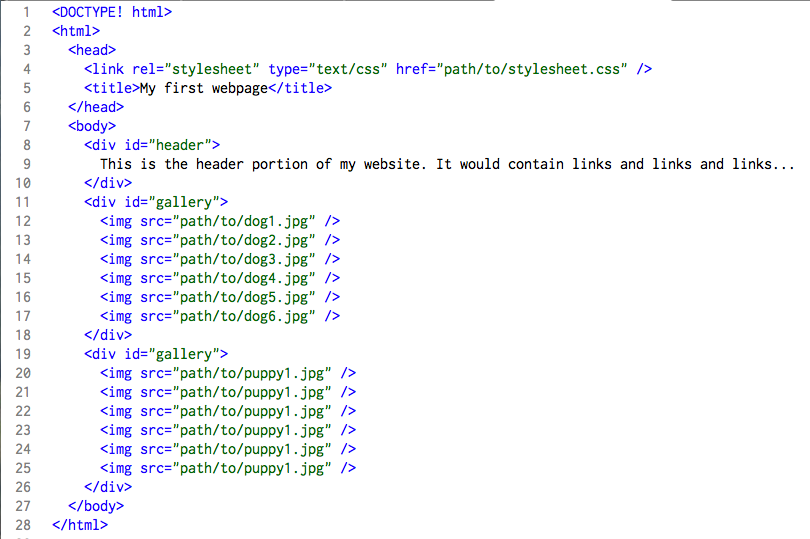
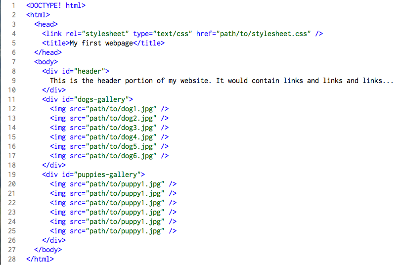
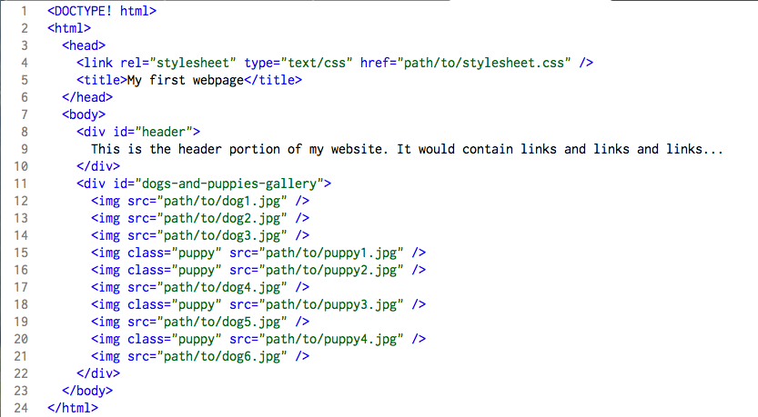

- Technical
- The battle of CSS selectors: ID vs. Class
CSS can be intimidating when first diving in, especially when trying to understand the importance of correctly using ID and class selectors. Why can you have only one element associated with an ID? Why the hell would I want to use a class, what does that '.' do anyway? In this blog post I will attempt to explain the differences between the two, and explain some best practices when using ID and class selectors. First off, let's get some general information out of the way. I will assume that you know why CSS is used in collaboration with HTML. There are 2 types of custom selectors available in CSS: the ID selector, which is denoted by a preceding '#'; and the class selector, which is denoted by a preceding '.'
The number one rule of CSS: Never ever have more than one element associated with a single ID. At least that's what you would tend to think, if you read any CSS tutorial on the web. The problem is the reasoning is never explained very thoroughly, so I will attempt to explain clearly (to the best of my ability).
So, what is an ID anyway? Like, how is it different from a class? Which one offers more flexibility than the other? These are all valid questions, questions that I often pondered before I understood the proper use of ID and class selectors. The truth is that ID and class selectors have exactly the same functionality in CSS: there is nothing an ID can do that a class can't. They are interchangeable, when speaking in terms of CSS functionality. You can try this out in your code editor by making two elements have the same ID selector, and you'll see that nothing breaks. This perpetuates the confusion around ID and class selectors, as there is no direct effect of breaking the number one rule in CSS.
Enter the Document Object Model. Now don't get intimidated by this term. It is basically a map of your entire HTML document, in terms of a hierarchical structure, like a tree. For instance, the 'html' tag is the root of your tree, the 'body' tag is nested underneath the 'html' tag because it is a child of 'html'. Say you have two 'div' tags in your 'body' tag, the 'div' tags are children of the 'body' tag and siblings to each other. This continues throughout the entire document until there are no more children of the elements. All of this information makes up what is called the DOM, or the Document Object Model. Okay, I got it...the DOM is cool, but what does it have to do with IDs and classes in CSS. Well, it just so happens that through the DOM, you can select specific elements when they have a specific CSS ID or class attribute. This is especially popular when used with JavaScript, which allows you to manipulate the DOM, changing elements, adding elements, removing elements, updating data, changing styles, etc. Instead of saying, I want this generic 'div' element in the middle of the page, but not all of the divs in the HTML, just this one specific div. How would you select it? How would the DOM know what div to grab? 
Now that you understand what the DOM is, and how JavaScript can interact with an HTML document and more specifically its DOM, it's time to talk about CSS IDs. Say you have a div on your page that holds multiple images of dogs, and you want the user to be able to interact with it by scrolling through images. How would you select that div through the DOM? You need to give it a specific CSS ID attribute, we'll call it #gallery. The newly named #gallery div, can now be accessed in the DOM by it's specific name. Great! Now let's add another gallery, this time it solely is made up of puppy photos...wait...is this where the CSS number one rule comes into play? Why yes, yes it is! If you named the new gallery with the same name (#gallery), the DOM wouldn't know which #gallery to update and your site would break, and potentially start armageddon...potentially. Solution: we'll rename the original #gallery to #dogs-gallery, and create the new puppy gallery with the ID #puppies-gallery. 
Since you know how to properly use ID selectors in CSS now, and the consequences of not doing so, let's talk about CSS class selectors. Using the same example as above, except that we have decided to move forward with one gallery, named #dogs-and-puppies-gallery. Inside #dogs-and-puppies-gallery we'll have photos of both dogs and puppies, but we want to offer users to filter out images of dogs...because puppies are, well, cuter. Our JavaScript guru has implemented a button that allows us to do such cuteness filtering, but how can we select just img tags that have a puppy photo? We can't use an ID, as we now know the proper usage of CSS ID selectors and that they can only be associated with one element in a HTML document. Aha! We'll use a CSS class selector! I knew they were going to prove useful for something! CSS class selectors can be associated with multiple elements on a page, and then when using the DOM, you can target all of those elements that have the specific class. We'll name the CSS class selector for the puppy images .puppy. 
The important thing to remember is that a CSS ID selector should only ever be associated with one element in an HTML document, they should be unique to the page. If you find yourself adding the same CSS ID to multiple elements in a HTML document, you should take the opportunity to use a CSS class selector.